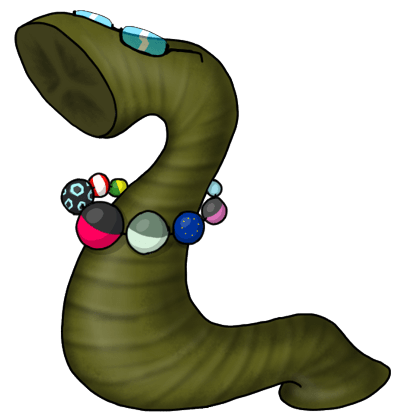

Овернульч
На картинке справа вы можете видеть, как выглядит официальный персонаж-талисман Овернульча. Дизайн был разработан и принят 25 марта 2017 года.
Немного истории
У Овернульча бы никогда не появилось маскота, если бы я не загорелся идеей идеей сделать этот дудл, а заодно придумать моэ-гирудоморфизм (sic!) для данного сайта. Несмотря на то, что персонаж не был нужен народу, было решено разработать оный моэ-гирудоморфизм и сделать его официальным маскотом.
И конечно же, это пиявка. Чего вы еще ждали? Я больше ничего не умею рисовать. Ну разве что круги. Потому пиявка и обзавелась бусами из кругов.
Статус
Маскот сей является официальным символом Овернульча. Но ввиду того, что далеко не всем людям она может прийтись по нраву по тем или иным причинам, персонаж не будет помещаться на основные страницы ресурса.